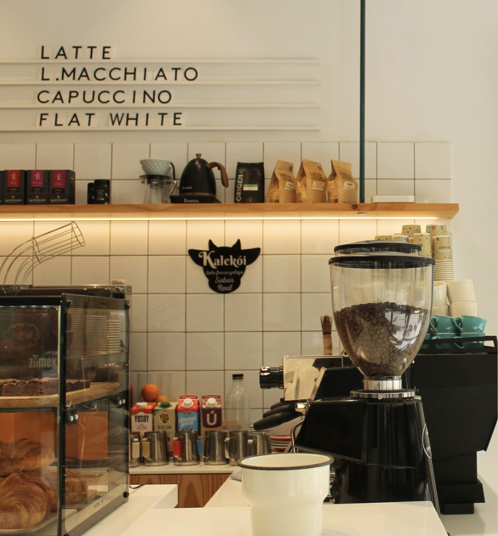
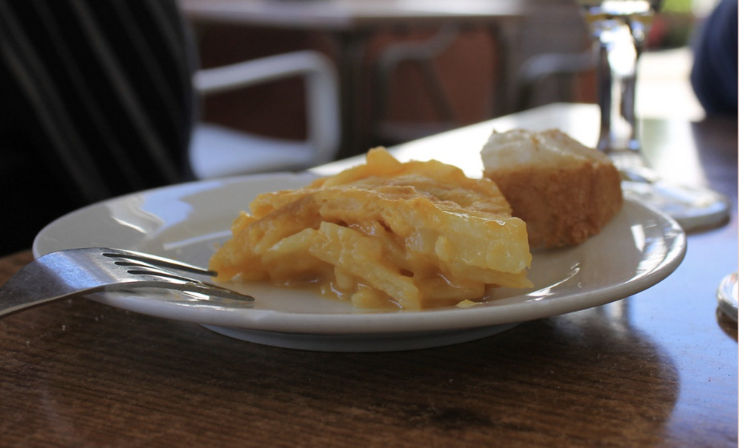
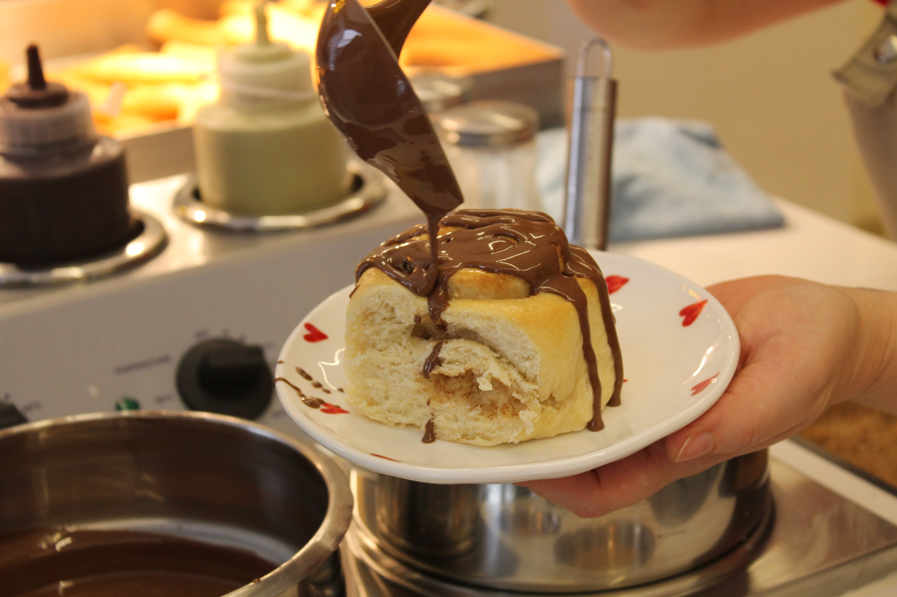
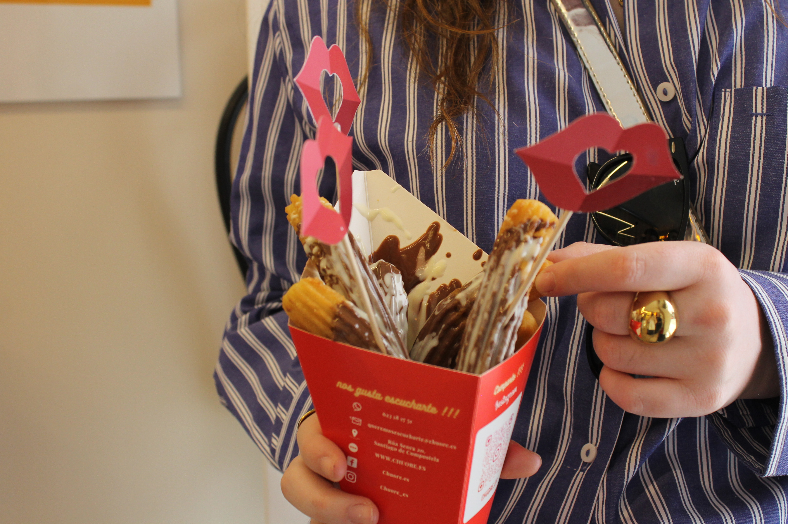
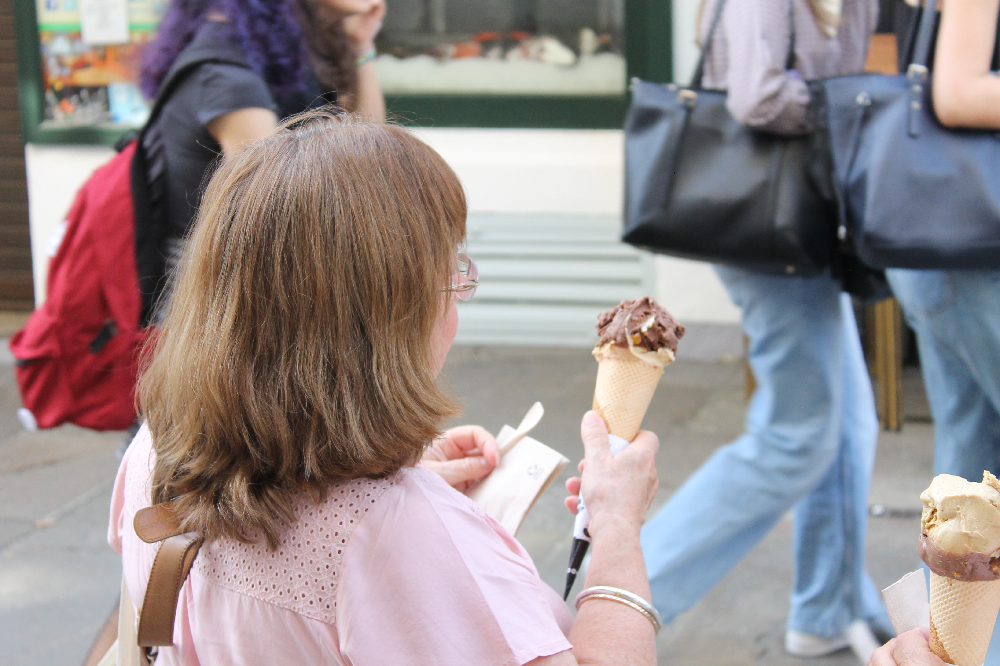

Santiago de Compostela non só se percorre a través das súas rúas, senón tamén mediante os seus cafés, bares e locais gastronómicos. Nunha cidade marcada pola vida universitaria, estes espazos convertéronse en lugares de encontro, rutina e identidade social.
Dende cafeterías ateigadas en época de exames ata locais que triunfan nas redes sociais grazas ás súas propostas visuais, a gastronomía compostelá forma parte da experiencia diaria de milleiros de persoas.

O café converteuse nun dos grandes símbolos da rutina compostelá. Entre bibliotecas, cafeterías e encontros improvisados, a cultura do café forma parte da identidade social da cidade universitaria.
Fran CaFé, Bo&Go ou as cafeterías da zona vella son xa puntos de encontro para estudantes, turistas e veciñanza.
Ler reportaxe completaNunha cidade universitaria como Santiago, os bares forman parte da vida social diaria. Entre clases, bibliotecas e noites longas, locais como La Tita ou Nariño convertéronse en auténticos puntos de encontro.
A tortilla é xa un símbolo gastronómico compostelán. Unha tradición compartida entre estudantes, turistas e veciñanza que transforma unha simple tapa nun fenómeno social.
Ler reportaxe completa
As novas tendencias gastronómicas transformaron as merendas nunha experiencia visual e social. Santiago tamén vive o boom dos doces virais e os locais pensados para compartir.
Ler reportaxe completa


O café, o vapor, o son das cafeterías e o movemento constante das rúas compostelás forman parte dunha experiencia diaria que define o ritmo da cidade universitaria.
A gastronomía compostelá vai máis alá da comida. Cafeterías, bares e locais funcionan como espazos de encontro que forman parte da identidade universitaria e social da cidade.
As cafeterías son puntos clave da rutina estudantil compostelá.
Locais como La Tita ou Nariño converteron a tortilla nun símbolo local.
A gastronomía funciona como punto de encontro entre xeracións.
O clima compostelán reforza a cultura de cafés e merendas.
Cafeterías, bares e locais gastronómicos forman parte da identidade compostelá. Este mapa recolle algúns dos espazos máis representativos da cultura gastronómica da cidade.
Compostela tamén se conta a través do que se come, do que se comparte e dos lugares onde a cidade se atopa.